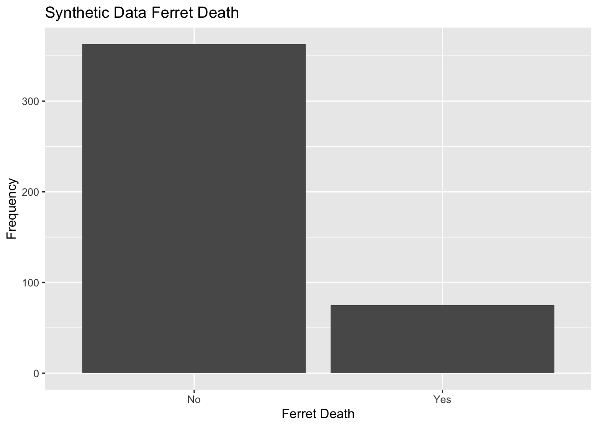
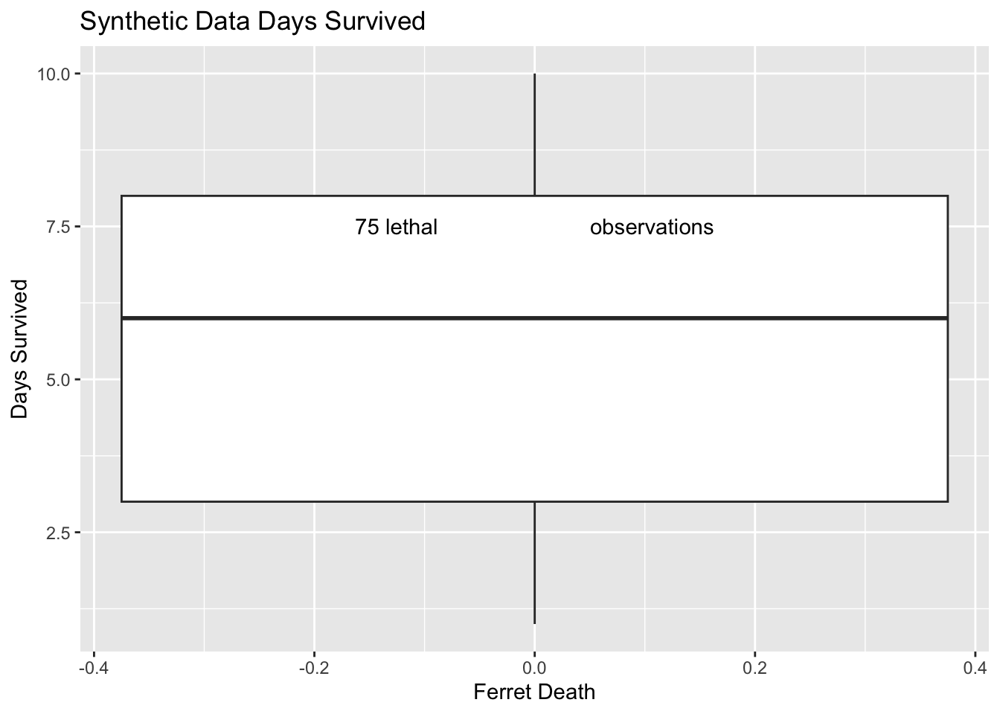
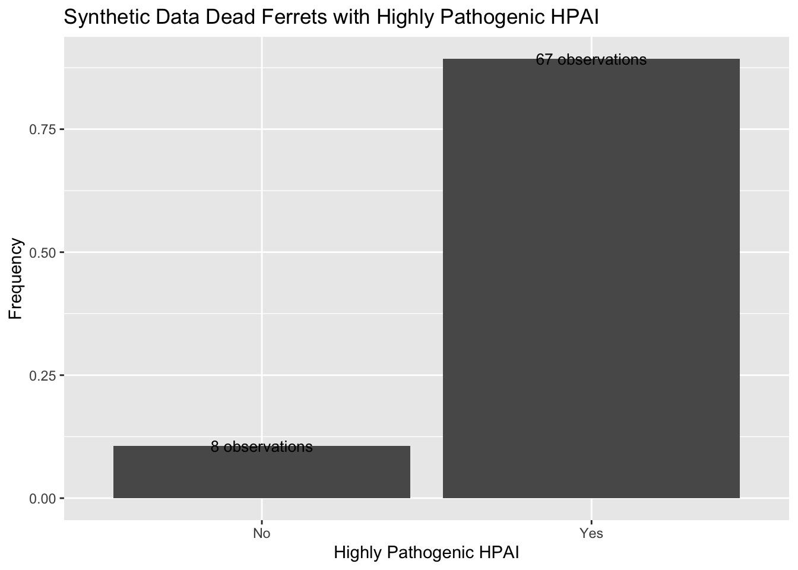
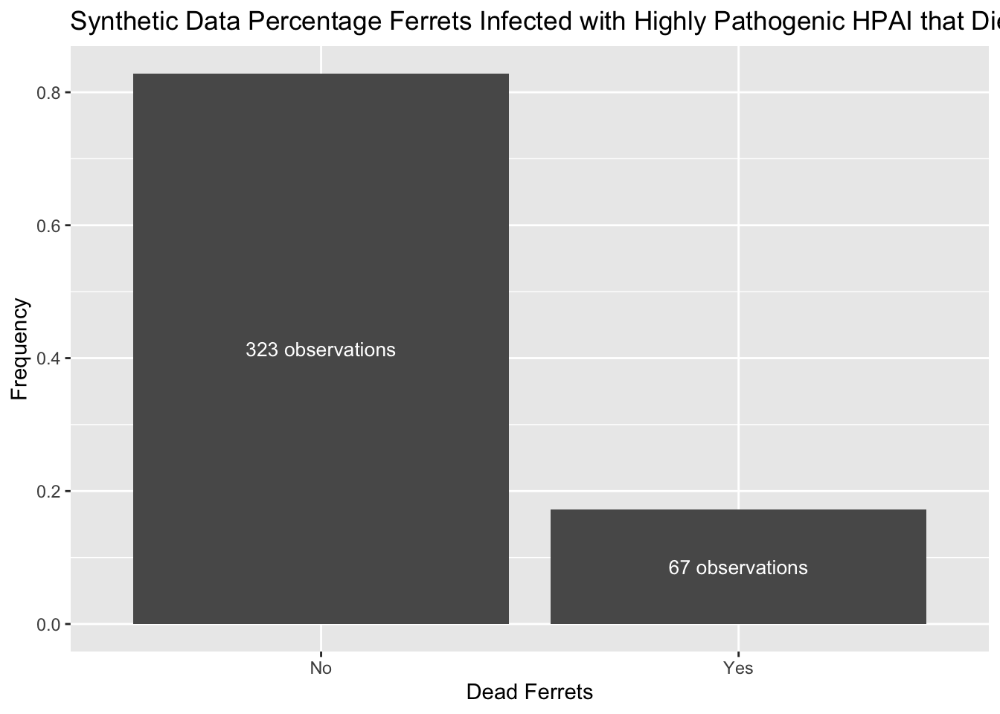
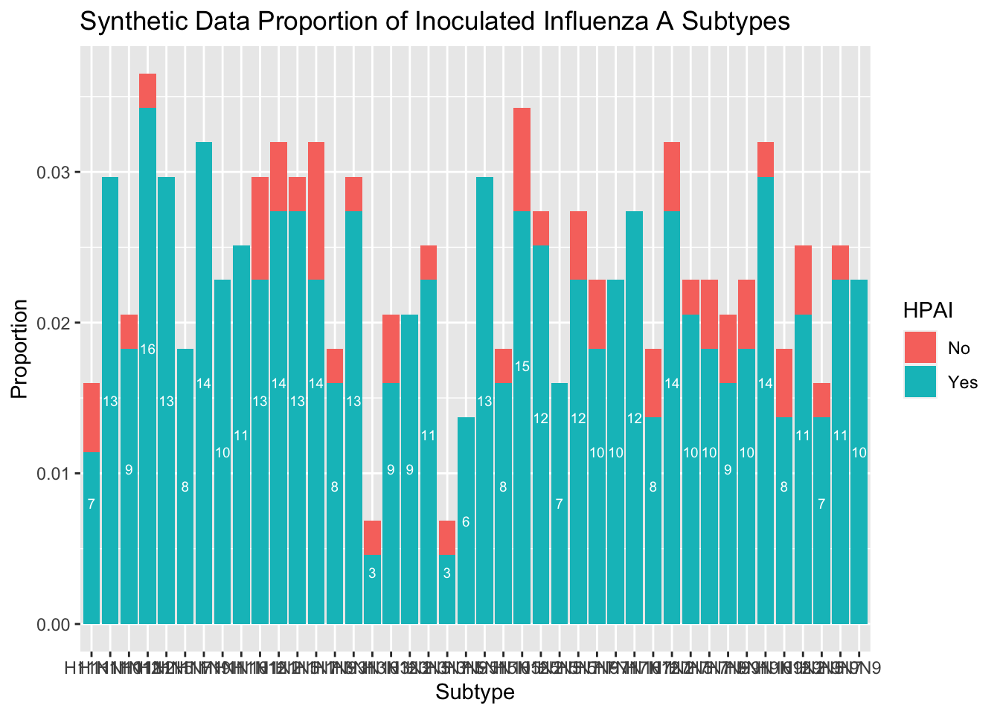
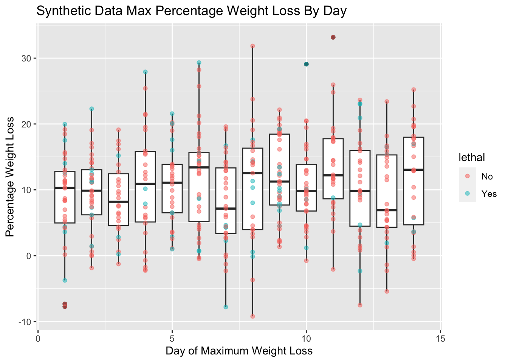
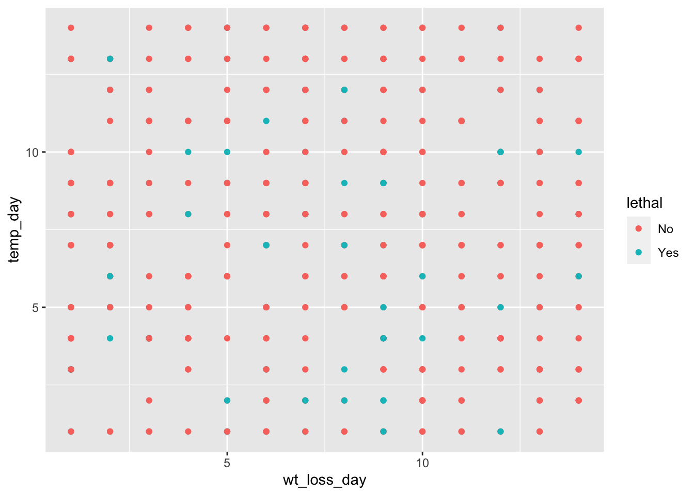

The following objects are masked from 'package:stats':
filter, lag
The following objects are masked from 'package:base':
intersect, setdiff, setequal, union
#install.packages("here")library(here)
here() starts at /Users/chirst/Desktop/Git/corahirst-MADA-portfolio
What’s the Dataset?
The following is a dataset containing measurements of morbitiy, mortality, and viral titre for 717 ferrets inoculated with 125 different Influenza A virus strains. Each observation contains data on a single ferret - thus, thre are 717 observations.
Viral titres were measured from nasal washes (NW) every-other day after incolution, and are given in columns d#_inoc, where d# indicates the number of days elapsed since inoculation. units indicates whether titres are reported in PFU or EID50 (tirated in cells or eggs!).
The virus column contains the unique identifier for the virus used to inoculate the ferret. Column lethal contains binary information, indicating whether the ferret survived (FALSE) the 14-day period or was humanely euthanized once titres reached humane endpoint criteria (TRUE).
HPAI inicates whether the virus has been classified as highly pathogenic avian influenza (TRUE) or is either low pathogenic avian influenza or non-avian (FALSE). HPAI_MBAA indicates whether the virus, if HPAI, has a multibasic amino acid cleavage site.
The HA and NA. columns depict the subtypes of hemaglutinin or neuraminidase (H#N#) of the inoculated virus.
The wt_loss and wt_loss_day columns indicate the maximum percentage weight loss the ferret experienced, and the day at which this maximum weight loss was reached.
Laslty, temp and temp_day report the maximum temperature experienced by the ferret, and the day that temperature was reached.
There are a few other columns in the dataset I will not be considering for the purpose of this exercise, including information about respiratory transmission, from where the virus was isolated, etc.
The public dataset was obtained from the CDC’s National Center for Immunization and Respiratory Diseases, here.
Data Processing
The dataset is loaded, viewed, and processed accordingly in the following section.
Loading the data and selecting variables of interest
The following code chunk solely loads the data and visualizes all 28 variables.
'data.frame': 717 obs. of 22 variables:
$ Ferret : chr "F1" "F2" "F3" "F4" ...
$ Virus : chr "A/Turkey/VA/4529/2002" "A/Turkey/VA/4529/2002" "A/Turkey/VA/4529/2002" "A/Turkey/VA/4529/2002" ...
$ units : chr "EID" "EID" "EID" "EID" ...
$ lethal : chr "false" "false" "false" "false" ...
$ lethal_day : int 0 0 0 0 0 0 0 0 0 0 ...
$ HPAI : chr "false" "false" "false" "false" ...
$ HPAI_MBAA : chr "false" "false" "false" "false" ...
$ HA : chr "H7" "H7" "H7" "H7" ...
$ NA. : chr "N2" "N2" "N2" "N2" ...
$ wt_loss : num 6.7 11.8 15.4 5.9 7.9 6.1 3.5 22.5 15 14.9 ...
$ wt_loss_day: int 7 4 6 11 5 9 11 7 7 8 ...
$ temp : num 0.5 0.9 2 1 1 0.5 0.5 1.1 1.1 1 ...
$ temp_day : int 4 7 8 9 3 3 7 7 7 1 ...
$ d1_inoc : num 6.5 5.5 6.25 6.75 6.25 7.25 5.75 5.75 4.75 6.5 ...
$ d2_inoc : num NA NA NA NA NA NA NA NA NA NA ...
$ d3_inoc : num 4.5 6.5 5.5 6.75 6.5 6.75 5.75 5.5 3.75 5.25 ...
$ d4_inoc : num NA NA NA NA NA NA NA NA NA NA ...
$ d5_inoc : num 4.75 4.75 5.75 5.75 4.75 4.5 5.75 5.5 5.25 6.5 ...
$ d6_inoc : num NA NA NA NA NA NA NA NA NA NA ...
$ d7_inoc : num 1.75 1.5 1.5 3.25 1.5 1.5 1.5 2.25 1.5 3.25 ...
$ d8_inoc : num NA NA NA NA NA NA NA NA NA NA ...
$ d9_inoc : num 1.5 1.5 1.5 1.5 1.5 1.5 1.5 1.5 1.5 1.5 ...
summary(ferret_IAV_data)
Ferret Virus units lethal
Length:717 Length:717 Length:717 Length:717
Class :character Class :character Class :character Class :character
Mode :character Mode :character Mode :character Mode :character
lethal_day HPAI HPAI_MBAA HA
Min. : 0.000 Length:717 Length:717 Length:717
1st Qu.: 0.000 Class :character Class :character Class :character
Median : 0.000 Mode :character Mode :character Mode :character
Mean : 1.013
3rd Qu.: 0.000
Max. :13.000
NA. wt_loss wt_loss_day temp
Length:717 Min. : 0.000 Min. : 0.000 Min. :0.000
Class :character 1st Qu.: 4.800 1st Qu.: 4.000 1st Qu.:1.000
Mode :character Median : 9.200 Median : 7.000 Median :1.600
Mean : 9.869 Mean : 6.424 Mean :1.596
3rd Qu.:14.400 3rd Qu.: 9.000 3rd Qu.:2.200
Max. :27.500 Max. :14.000 Max. :4.000
NA's :2 NA's :4
temp_day d1_inoc d2_inoc d3_inoc d4_inoc
Min. : 0.0 Min. :1.000 Min. :3.500 Min. :1.980 Min. :1.980
1st Qu.: 1.0 1st Qu.:4.800 1st Qu.:5.500 1st Qu.:4.500 1st Qu.:4.255
Median : 2.0 Median :5.780 Median :6.155 Median :5.320 Median :5.250
Mean : 3.1 Mean :5.811 Mean :5.950 Mean :5.284 Mean :5.046
3rd Qu.: 4.0 3rd Qu.:6.750 3rd Qu.:6.500 3rd Qu.:6.250 3rd Qu.:5.750
Max. :14.0 Max. :9.250 Max. :8.750 Max. :8.750 Max. :7.500
NA's :110 NA's :607 NA's :110 NA's :607
d5_inoc d6_inoc d7_inoc d8_inoc
Min. :1.500 Min. :1.500 Min. :1.000 Min. :1.000
1st Qu.:4.460 1st Qu.:3.250 1st Qu.:1.000 1st Qu.:1.500
Median :5.100 Median :4.500 Median :1.500 Median :1.500
Mean :5.042 Mean :4.195 Mean :1.986 Mean :1.573
3rd Qu.:5.750 3rd Qu.:5.250 3rd Qu.:2.500 3rd Qu.:1.500
Max. :9.500 Max. :6.750 Max. :7.000 Max. :3.500
NA's :116 NA's :615 NA's :142 NA's :626
d9_inoc
Min. :1.000
1st Qu.:1.000
Median :1.500
Mean :1.327
3rd Qu.:1.500
Max. :4.750
NA's :169
Processing
All titre variables (d#_inoc), wt_loss, and temp are numeric, as they should be. Similarly, the ID variables Ferret and Virus are similarly loaded correctly as character. Lastly, any time variable counting days post inoculation, lethal_day, wt_loss_day, and temp_day are integers, as days are counted discretely.
HA and NA., referring to the head and neuraminidase subtypes of the virus used in each observation, were loaded as character. While they are character variables inherently, different virus can have different combinations of HA and NA, and can be grouped by either. The type of units titres were measured with, units, is also a categorical variable, as observations can contain one of two values, “EID” or “PFU”. Thus, we can treat units, HA, and NA. as categorical, and factor them.
All binary variables - lethal, HPAI, and HPAI_MBAA - are loaded as characters and not as logical. We can fix that, too.
The following code chunk factors the categorical variables and replaces binary character variables with logical values.
'data.frame': 717 obs. of 22 variables:
$ Ferret : chr "F1" "F2" "F3" "F4" ...
$ Virus : chr "A/Turkey/VA/4529/2002" "A/Turkey/VA/4529/2002" "A/Turkey/VA/4529/2002" "A/Turkey/VA/4529/2002" ...
$ units : Factor w/ 2 levels "EID","PFU": 1 1 1 1 1 1 1 1 1 1 ...
$ lethal : logi FALSE FALSE FALSE FALSE FALSE FALSE ...
$ lethal_day : int 0 0 0 0 0 0 0 0 0 0 ...
$ HPAI : logi FALSE FALSE FALSE FALSE FALSE FALSE ...
$ HPAI_MBAA : logi FALSE FALSE FALSE FALSE FALSE FALSE ...
$ HA : Factor w/ 6 levels "H1","H2","H3",..: 5 5 5 5 5 5 5 5 5 5 ...
$ NA. : Factor w/ 7 levels "N1","N2","N3",..: 2 2 2 2 2 2 2 2 2 5 ...
$ wt_loss : num 6.7 11.8 15.4 5.9 7.9 6.1 3.5 22.5 15 14.9 ...
$ wt_loss_day: int 7 4 6 11 5 9 11 7 7 8 ...
$ temp : num 0.5 0.9 2 1 1 0.5 0.5 1.1 1.1 1 ...
$ temp_day : int 4 7 8 9 3 3 7 7 7 1 ...
$ d1_inoc : num 6.5 5.5 6.25 6.75 6.25 7.25 5.75 5.75 4.75 6.5 ...
$ d2_inoc : num NA NA NA NA NA NA NA NA NA NA ...
$ d3_inoc : num 4.5 6.5 5.5 6.75 6.5 6.75 5.75 5.5 3.75 5.25 ...
$ d4_inoc : num NA NA NA NA NA NA NA NA NA NA ...
$ d5_inoc : num 4.75 4.75 5.75 5.75 4.75 4.5 5.75 5.5 5.25 6.5 ...
$ d6_inoc : num NA NA NA NA NA NA NA NA NA NA ...
$ d7_inoc : num 1.75 1.5 1.5 3.25 1.5 1.5 1.5 2.25 1.5 3.25 ...
$ d8_inoc : num NA NA NA NA NA NA NA NA NA NA ...
$ d9_inoc : num 1.5 1.5 1.5 1.5 1.5 1.5 1.5 1.5 1.5 1.5 ...
summary(ferret_IAV_data) #logicals are logicals and factors are factors, both with count information
Ferret Virus units lethal
Length:717 Length:717 EID:438 Mode :logical
Class :character Class :character PFU:279 FALSE:615
Mode :character Mode :character TRUE :102
lethal_day HPAI HPAI_MBAA HA NA.
Min. : 0.000 Mode :logical Mode :logical H1:213 N1:315
1st Qu.: 0.000 FALSE:510 FALSE:522 H2: 51 N2:260
Median : 0.000 TRUE :207 TRUE :195 H3:123 N3: 36
Mean : 1.013 H5:156 N6: 9
3rd Qu.: 0.000 H7:149 N7: 24
Max. :13.000 H9: 25 N8: 9
N9: 64
wt_loss wt_loss_day temp temp_day
Min. : 0.000 Min. : 0.000 Min. :0.000 Min. : 0.0
1st Qu.: 4.800 1st Qu.: 4.000 1st Qu.:1.000 1st Qu.: 1.0
Median : 9.200 Median : 7.000 Median :1.600 Median : 2.0
Mean : 9.869 Mean : 6.424 Mean :1.596 Mean : 3.1
3rd Qu.:14.400 3rd Qu.: 9.000 3rd Qu.:2.200 3rd Qu.: 4.0
Max. :27.500 Max. :14.000 Max. :4.000 Max. :14.0
NA's :2 NA's :4
d1_inoc d2_inoc d3_inoc d4_inoc
Min. :1.000 Min. :3.500 Min. :1.980 Min. :1.980
1st Qu.:4.800 1st Qu.:5.500 1st Qu.:4.500 1st Qu.:4.255
Median :5.780 Median :6.155 Median :5.320 Median :5.250
Mean :5.811 Mean :5.950 Mean :5.284 Mean :5.046
3rd Qu.:6.750 3rd Qu.:6.500 3rd Qu.:6.250 3rd Qu.:5.750
Max. :9.250 Max. :8.750 Max. :8.750 Max. :7.500
NA's :110 NA's :607 NA's :110 NA's :607
d5_inoc d6_inoc d7_inoc d8_inoc
Min. :1.500 Min. :1.500 Min. :1.000 Min. :1.000
1st Qu.:4.460 1st Qu.:3.250 1st Qu.:1.000 1st Qu.:1.500
Median :5.100 Median :4.500 Median :1.500 Median :1.500
Mean :5.042 Mean :4.195 Mean :1.986 Mean :1.573
3rd Qu.:5.750 3rd Qu.:5.250 3rd Qu.:2.500 3rd Qu.:1.500
Max. :9.500 Max. :6.750 Max. :7.000 Max. :3.500
NA's :116 NA's :615 NA's :142 NA's :626
d9_inoc
Min. :1.000
1st Qu.:1.000
Median :1.500
Mean :1.327
3rd Qu.:1.500
Max. :4.750
NA's :169
#note that we could have accomplished both in the same "pipe" - I've separated them here to make it clear what manipulation is being preformed on which columns :)
Now, let’s think about our units variable. “PFU” and “EID50” are both measurements of virus titres, but come from different titration methods - essentially, this means that they cannot be compared.
I’d like to make some correlations between virus titres and other variables included in the dataset. I can’t do that with a mixture of titration methods! So, I am only going to include observations where viral titres were measured via the titration method with the greatest number of observations.
In the following code chunk, I determine which titration unit, “PFU” or “EID”, has the greatest number of observations. Then, I am going to filter my dataset to only include observations where titres are measured with that method. I’ll keep that variable around, though there will only be observations for one factor level, just as a reminder which units the titres are measured in.
# which factor level of units has the greatest number of observations? units.counts = (summary(ferret_IAV_data$units)) #a named vector of counts of the number of observations for each level of variable "units"which.units.max =names(units.counts)[which.max(units.counts)] #the name of the level of variable "units" with the greatest number of observations# filtering for observations with titres given in units which.units.max ferret_IAV_data = ferret_IAV_data %>%filter(units == which.units.max)# let's check that worked!str(ferret_IAV_data)
'data.frame': 438 obs. of 22 variables:
$ Ferret : chr "F1" "F2" "F3" "F4" ...
$ Virus : chr "A/Turkey/VA/4529/2002" "A/Turkey/VA/4529/2002" "A/Turkey/VA/4529/2002" "A/Turkey/VA/4529/2002" ...
$ units : Factor w/ 2 levels "EID","PFU": 1 1 1 1 1 1 1 1 1 1 ...
$ lethal : logi FALSE FALSE FALSE FALSE FALSE FALSE ...
$ lethal_day : int 0 0 0 0 0 0 0 0 0 0 ...
$ HPAI : logi FALSE FALSE FALSE FALSE FALSE FALSE ...
$ HPAI_MBAA : logi FALSE FALSE FALSE FALSE FALSE FALSE ...
$ HA : Factor w/ 6 levels "H1","H2","H3",..: 5 5 5 5 5 5 5 5 5 5 ...
$ NA. : Factor w/ 7 levels "N1","N2","N3",..: 2 2 2 2 2 2 2 2 2 5 ...
$ wt_loss : num 6.7 11.8 15.4 5.9 7.9 6.1 3.5 22.5 15 14.9 ...
$ wt_loss_day: int 7 4 6 11 5 9 11 7 7 8 ...
$ temp : num 0.5 0.9 2 1 1 0.5 0.5 1.1 1.1 1 ...
$ temp_day : int 4 7 8 9 3 3 7 7 7 1 ...
$ d1_inoc : num 6.5 5.5 6.25 6.75 6.25 7.25 5.75 5.75 4.75 6.5 ...
$ d2_inoc : num NA NA NA NA NA NA NA NA NA NA ...
$ d3_inoc : num 4.5 6.5 5.5 6.75 6.5 6.75 5.75 5.5 3.75 5.25 ...
$ d4_inoc : num NA NA NA NA NA NA NA NA NA NA ...
$ d5_inoc : num 4.75 4.75 5.75 5.75 4.75 4.5 5.75 5.5 5.25 6.5 ...
$ d6_inoc : num NA NA NA NA NA NA NA NA NA NA ...
$ d7_inoc : num 1.75 1.5 1.5 3.25 1.5 1.5 1.5 2.25 1.5 3.25 ...
$ d8_inoc : num NA NA NA NA NA NA NA NA NA NA ...
$ d9_inoc : num 1.5 1.5 1.5 1.5 1.5 1.5 1.5 1.5 1.5 1.5 ...
summary(ferret_IAV_data)
Ferret Virus units lethal
Length:438 Length:438 EID:438 Mode :logical
Class :character Class :character PFU: 0 FALSE:348
Mode :character Mode :character TRUE :90
lethal_day HPAI HPAI_MBAA HA NA.
Min. : 0.000 Mode :logical Mode :logical H1: 73 N1:214
1st Qu.: 0.000 FALSE:231 FALSE:243 H2: 51 N2:119
Median : 0.000 TRUE :207 TRUE :195 H3: 25 N3: 36
Mean : 1.429 H5:156 N6: 9
3rd Qu.: 0.000 H7:112 N7: 24
Max. :13.000 H9: 21 N8: 9
N9: 27
wt_loss wt_loss_day temp temp_day
Min. : 0.000 Min. : 0.000 Min. :0.000 Min. : 0.000
1st Qu.: 4.200 1st Qu.: 4.000 1st Qu.:1.100 1st Qu.: 1.000
Median : 9.000 Median : 7.000 Median :1.700 Median : 2.000
Mean : 9.803 Mean : 6.194 Mean :1.694 Mean : 3.292
3rd Qu.:15.000 3rd Qu.: 8.000 3rd Qu.:2.300 3rd Qu.: 5.000
Max. :27.200 Max. :14.000 Max. :4.000 Max. :12.000
NA's :1 NA's :2
d1_inoc d2_inoc d3_inoc d4_inoc
Min. :1.980 Min. :3.500 Min. :1.980 Min. :1.980
1st Qu.:4.500 1st Qu.:5.312 1st Qu.:4.750 1st Qu.:4.319
Median :5.500 Median :5.750 Median :5.750 Median :5.500
Mean :5.518 Mean :5.832 Mean :5.492 Mean :5.112
3rd Qu.:6.500 3rd Qu.:6.500 3rd Qu.:6.500 3rd Qu.:6.125
Max. :9.250 Max. :8.750 Max. :8.750 Max. :7.500
NA's :94 NA's :344 NA's :94 NA's :344
d5_inoc d6_inoc d7_inoc d8_inoc d9_inoc
Min. :1.500 Min. :1.500 Min. :1.50 Min. :1.500 Min. :1.500
1st Qu.:4.500 1st Qu.:3.250 1st Qu.:1.50 1st Qu.:1.500 1st Qu.:1.500
Median :5.250 Median :4.500 Median :1.98 Median :1.500 Median :1.500
Mean :5.236 Mean :4.142 Mean :2.44 Mean :1.583 Mean :1.565
3rd Qu.:6.250 3rd Qu.:5.250 3rd Qu.:3.25 3rd Qu.:1.500 3rd Qu.:1.500
Max. :9.500 Max. :6.750 Max. :7.00 Max. :3.500 Max. :4.750
NA's :99 NA's :352 NA's :122 NA's :363 NA's :148
It seems that the majority of titres were measured in EID units (meaning that titrations were done in eggs!), so only observations where titres were measured in EID are being included in the processed dataset. Please note that all observations and variables remain in the file “cdc-exercise/data/IAV_morbidity_and_titer_measurements_ferrets.csv”, so we can reconduct this processing and analysis excluding all observations measured in EID instead, if we want!
At this point, we should have 438 observations remaining.
Lastly, looking at the column lethal_day, ferrets that survived there infection are given a 0 for lethal_day. But that will skew our data quite a bit toward early lethality! So, I want to replace all “0” values for lethal_day with “NA”.
Warning: The dot-dot notation (`..count..`) was deprecated in ggplot2 3.4.0.
ℹ Please use `after_stat(count)` instead.
plot2 = ferret_IAV_data %>%filter(lethal == T) %>%ggplot() +geom_boxplot(aes(y = lethal_day)) +annotate(geom ="text", x =0, y =7.5, label =paste(sum(ferret_IAV_data$lethal==TRUE), "lethal observations")) +labs(x ="", y ="days survived")plot2
I’d also like to know how many strains are categorized as highly virulent/pathogenic, and how many ferrets died when infected with them:
table = ferret_IAV_data %>%select("HPAI", "lethal") %>%group_by(HPAI) %>%count(lethal)plot3 = ferret_IAV_data %>%select("HPAI", "lethal") %>%filter(lethal == T) %>%ggplot() +geom_bar(aes(x = HPAI, y = (..count..)/sum(..count..))) +stat_count(geom ="text", colour ="black", size =3.5, aes(x = HPAI, label =paste(..count.., "observations"), y = ..count../(sum(ferret_IAV_data$lethal==T)))) +labs(x ="highly pathogenic HPAI", y ="frequency", title ="Percentage of dead ferrets infected with highly pathogenic HPAI")plot3
plot4 = ferret_IAV_data %>%select("HPAI", "lethal") %>%filter(HPAI == T) %>%ggplot() +geom_bar(aes(x = lethal, y = (..count..)/sum(..count..))) +stat_count(geom ="text", colour ="white", size =3.5, aes(x = lethal, label =paste(..count.., "observations"), y = ..count../(2*sum(ferret_IAV_data$HPAI==T)))) +labs(x ="ferret died", y ="frequency", title ="Percentage ferrets infected with highly pathogenic HPAI that died")plot4
How many highly virulent strains have the weird molecular thing (multi-basic cleavage site on HA, I mean) going on? How many lethal strains have the weird molecular thing going on?
# filter for HPAI and HPAI_MBAAplot5 = ferret_IAV_data %>%select("HPAI", "HPAI_MBAA") %>%filter(HPAI ==TRUE) %>%# only include observations for which HPAI is TRUEggplot() +geom_bar(aes(x = HPAI_MBAA, y = ..count../sum(..count..))) +stat_count(geom ="text", colour ="white", size =3.5, aes(x = HPAI_MBAA, label =paste(..count.., "observations"), y = ..count../(2*sum(ferret_IAV_data$HPAI==T)))) +labs(x ="Has multi-basic amino acid cleavage site", y ="proportion", title ="proportion of highly pathogenic HPAI with MBAA" )plot5
# Knowing that most highly pathogenic HPAI have MBAA, lets see if the HPAI that killed the ferrets were MBAA +plot6 = ferret_IAV_data %>%select("lethal", "HPAI", "HPAI_MBAA") %>%filter(HPAI ==TRUE, lethal ==TRUE) %>%# only observations that have HPAI and died (89 observations, according to plot4)ggplot() +geom_bar(aes(x = HPAI_MBAA, y = ..count../sum(..count..))) +#of these obs, proportion w and without MBAAstat_count(geom ="text", colour ="white", size =3.5, aes(x = HPAI_MBAA, label =paste(..count.., "observations"), y = ..count../(2*sum(ferret_IAV_data$HPAI==T)))) +labs(x ="Has multi-basic amino acid cleavage site", y ="proportion", title ="proportion of lethal, highly pathogenic HPAI with MBAA" )plot6
# and just to be good, lets see the proportion of HPAI that DIDN'T kill the ferrets that are MBAA - plot7 = ferret_IAV_data %>%select("lethal", "HPAI", "HPAI_MBAA") %>%filter(HPAI ==TRUE, lethal ==FALSE) %>%# only observations that have HPAI and DIDNT die (118 observations, according to plot4)ggplot() +geom_bar(aes(x = HPAI_MBAA, y = ..count../sum(..count..))) +#of these obs, proportion w and without MBAAstat_count(geom ="text", colour ="white", size =3.5, aes(x = HPAI_MBAA, label =paste(..count.., "observations"), y = ..count../(2*sum(ferret_IAV_data$HPAI==T)))) +labs(x ="Has multi-basic amino acid cleavage site", y ="proportion", title ="proportion of NON-lethal, highly pathogenic HPAI with MBAA" )plot7
So MBAA might make a highly pathogenic MBAA slightly more lethal, but hardly. That’s why we do this sort of thing!
Okay, now that that is over -
Diversity of NA and HA; how many combinations, and representation of each combination? Which combos incude highly pathogenic HPAI?
# we will add a variable with the subtype of IAVferret_IAV_data = ferret_IAV_data %>%mutate(subtype =as.factor(paste0(HA,NA.))) #subtype nomenclature is H#N## lets see a bar plot of subtypesplot8 = ferret_IAV_data %>%ggplot() +geom_bar(aes(x = subtype, y = ..count../sum(..count..), fill = HPAI)) +#I wanted to add a little color for no reason ;)stat_count(geom ="text", colour ="white", size =2.5, aes(x = subtype, label = ..count.., y = ..count../(2*length(ferret_IAV_data$subtype)))) +labs(x ="subtype", y ="proportion", title ="proportion of inoculated influenza A subtypes" )plot8
Overall, how much weight loss? Stratified by whether they died?
#lets see what a scatterplot of max percentage weight loss by day of max weight loss looks likeplot9 =ggplot() +geom_boxplot(data = ferret_IAV_data, aes(x = wt_loss_day, y = wt_loss, group = wt_loss_day)) +geom_point(data = ferret_IAV_data, aes(x = wt_loss_day, y = wt_loss, col = lethal), alpha =0.5) +labs( x ="day of maximum percentage weight loss", y ="percentage weight loss", title ="max percentage weight loss by day")plot9
Diversity in temperatures for dead/not dead? highly virulent vs not?
#lets see what a scatterplot of max percentage weight loss by day of max weight loss looks likeplot10 =ggplot() +geom_boxplot(data = ferret_IAV_data, aes(x = temp_day, y = temp, group = temp_day)) +geom_point(data = ferret_IAV_data, aes(x = temp_day, y = temp, col = lethal), alpha =0.5) +labs( x ="day of maximum temperature", y ="temperature", title ="max temperature by day")plot10
does day of max weight loss correlate with day of max temp?
plot11 =ggplot() +geom_point(data = ferret_IAV_data, aes(x = wt_loss_day, y = temp_day, col = lethal))#lol noplot11
5)creating a dataframe of viral titres for each ferret! this is a skeleton code - there are wayyy to many samples here to be meaningful. Either we randomly sample to get a sense of the overall behavior, or we filter based on some other criteria. The choice is yours!
time_series_titres =as.vector(t(data.matrix(ferret_IAV_data[,grep("_inoc", colnames(ferret_IAV_data))]))) #transform a matrix of only titres variables into a matrix, transpose so that each row is a day and each column is a sample, and collapse into a vector # the first 9 elements of vector time_series_titres contains the titres from days 1-9 for ferret 1, the next 9 for ferret 2, and so on. now, we want to create a dataframe with the sample ID of each ferret repeated 9s in one column, and the sequence of days 1:9 repeated 9 times in the othertime_series_titres =data.frame(titre = time_series_titres, Ferret =rep(ferret_IAV_data$Ferret, each =9), DayPost =rep(1:9, times =length(ferret_IAV_data$Ferret)))ggplot() +geom_point(data = time_series_titres, aes(x = DayPost, y = titre, col = Ferret), show.legend =FALSE) #see? nothing to learn here, yet...
I am going to make a synthetic data set to mirror this descriptive analysis by selecting 12 variables used to create the descriptive plots. I need an ID for the inoculated Ferret, an ID for the Virus used to inoculate it, whether the infection was lethal, if the infection was lethal, when the ferret died (lethal_day), whether the virus is a highly virulant avian HPAI, if the virus is highly virulent HPAI, whether it has a multi-basic amino acid cleavage site at HA, or an HPAI_MBAA, the identity of the virus’s HA and NA subtypes, the maximum percentage wt_loss of the ferret and which day this maximum was measured (wt_loss_day), and the maximum temperature temp of the ferret and which day this maximum was measured (temp_day). I will not generate a time series column because the code included in the descriptive analysis is only a skeleton, so I would have nothing to compare it to.
To get started, I asked ChatGPT 3.5 to create R code for a synthetic data set with these 12 variables by copying the previous paragraph into the AI tool and specifically asking for R code.
## load packageslibrary(dplyr)## set seed for reproducibilityset.seed(123)## original R code provided by ChatGPT# set number of observationsn <-100# generate synthetic datadata <-tibble(Ferret_ID =1:n,Virus_ID =sample(1:10, n, replace =TRUE),lethal =sample(c("Yes", "No"), n, replace =TRUE),lethal_day =ifelse(lethal =="Yes", sample(1:10, n, replace =TRUE), NA),HPAI =sample(c("Yes", "No"), n, replace =TRUE),HPAI_MBAA =ifelse(HPAI =="Yes", sample(c("Yes", "No"), n, replace =TRUE), NA),HA_subtype =sample(c("H1", "H3", "H5", "H7", "H9"), n, replace =TRUE),NA_subtype =sample(c("N1", "N2", "N5", "N7", "N9"), n, replace =TRUE),wt_loss =rnorm(n, mean =20, sd =5),wt_loss_day =sample(1:10, n, replace =TRUE),temp =rnorm(n, mean =38, sd =0.5),temp_day =sample(1:10, n, replace =TRUE))# print the first few rows of the synthetic datasetprint(head(data))
# A tibble: 6 × 12
Ferret_ID Virus_ID lethal lethal_day HPAI HPAI_MBAA HA_subtype NA_subtype
<int> <int> <chr> <int> <chr> <chr> <chr> <chr>
1 1 3 No NA No <NA> H9 N9
2 2 3 No NA No <NA> H3 N7
3 3 10 Yes 7 No <NA> H1 N7
4 4 2 No NA No <NA> H7 N7
5 5 6 Yes 1 Yes No H3 N9
6 6 5 Yes 9 No <NA> H3 N7
# ℹ 4 more variables: wt_loss <dbl>, wt_loss_day <int>, temp <dbl>,
# temp_day <int>
The head of the new synthetic data set indicates that the ifelse statements were successful because there are NA values in the ‘lethal_day’ and ‘HPAI_MBAA’ variables. This makes sense because not every ferret died and not every HPAI virus had a multi-basic amino acid cleavage site at HA.
This data set is sufficient for modeling the original data set, but I made a few modifications to make it more similar to the real data. I want to include the same number of observations as the original data set, which is an easy change. The original synthetic data included 10 different virus IDs, but there are 83 different viral strands included in the real data. The real HA variable is a factor with 6 levels, and the real NA variable is a factor with 7 levels. I added 1 option to the HA_subtype variable and 2 options to the NA_subtype variable. I updated the ‘wt_loss’ and ‘temp’ variables with the true means and standard deviations of the real data. The real study was conducted over 14 days, so I made that change as well for the ‘wt_loss_day’ and ‘temp_day’ variables.
I returned to this code after generating the first few plots and added probabilities to the ‘lethal’ and ‘HPAI’ variables. I was originally getting an even distribution for both of these variables in the synthetic data, which does not accurately portray the real data. Adding these probabilities increased the accuracy of the synthetic data compared to the real data.
# explore real data to make synthetic data more accurate dim(ferret_IAV_data)
'data.frame': 438 obs. of 23 variables:
$ Ferret : chr "F1" "F2" "F3" "F4" ...
$ Virus : chr "A/Turkey/VA/4529/2002" "A/Turkey/VA/4529/2002" "A/Turkey/VA/4529/2002" "A/Turkey/VA/4529/2002" ...
$ units : Factor w/ 2 levels "EID","PFU": 1 1 1 1 1 1 1 1 1 1 ...
$ lethal : logi FALSE FALSE FALSE FALSE FALSE FALSE ...
$ lethal_day : int NA NA NA NA NA NA NA NA NA NA ...
$ HPAI : logi FALSE FALSE FALSE FALSE FALSE FALSE ...
$ HPAI_MBAA : logi FALSE FALSE FALSE FALSE FALSE FALSE ...
$ HA : Factor w/ 6 levels "H1","H2","H3",..: 5 5 5 5 5 5 5 5 5 5 ...
$ NA. : Factor w/ 7 levels "N1","N2","N3",..: 2 2 2 2 2 2 2 2 2 5 ...
$ wt_loss : num 6.7 11.8 15.4 5.9 7.9 6.1 3.5 22.5 15 14.9 ...
$ wt_loss_day: int 7 4 6 11 5 9 11 7 7 8 ...
$ temp : num 0.5 0.9 2 1 1 0.5 0.5 1.1 1.1 1 ...
$ temp_day : int 4 7 8 9 3 3 7 7 7 1 ...
$ d1_inoc : num 6.5 5.5 6.25 6.75 6.25 7.25 5.75 5.75 4.75 6.5 ...
$ d2_inoc : num NA NA NA NA NA NA NA NA NA NA ...
$ d3_inoc : num 4.5 6.5 5.5 6.75 6.5 6.75 5.75 5.5 3.75 5.25 ...
$ d4_inoc : num NA NA NA NA NA NA NA NA NA NA ...
$ d5_inoc : num 4.75 4.75 5.75 5.75 4.75 4.5 5.75 5.5 5.25 6.5 ...
$ d6_inoc : num NA NA NA NA NA NA NA NA NA NA ...
$ d7_inoc : num 1.75 1.5 1.5 3.25 1.5 1.5 1.5 2.25 1.5 3.25 ...
$ d8_inoc : num NA NA NA NA NA NA NA NA NA NA ...
$ d9_inoc : num 1.5 1.5 1.5 1.5 1.5 1.5 1.5 1.5 1.5 1.5 ...
$ subtype : Factor w/ 15 levels "H1N1","H2N2",..: 10 10 10 10 10 10 10 10 10 12 ...
summary(ferret_IAV_data$wt_loss)
Min. 1st Qu. Median Mean 3rd Qu. Max. NA's
0.000 4.200 9.000 9.803 15.000 27.200 1
sd(ferret_IAV_data$wt_loss, na.rm =TRUE)
[1] 6.957058
summary(ferret_IAV_data$temp)
Min. 1st Qu. Median Mean 3rd Qu. Max. NA's
0.000 1.100 1.700 1.694 2.300 4.000 2
sd(ferret_IAV_data$temp, na.rm =TRUE)
[1] 0.7716429
range(ferret_IAV_data$wt_loss_day)
[1] 0 14
# set seed for reproducibility set.seed(125)# set number of observationsn <-438#match the number of observations from the original data set# generate synthetic datadata2 <-tibble(Ferret_ID =1:n,Virus_ID =sample(1:83, n, replace =TRUE), #increase number of viral strand optionslethal =sample(c("Yes", "No"), n, replace =TRUE, prob =c(0.2, 0.8)),lethal_day =ifelse(lethal =="Yes", sample(1:10, n, replace =TRUE), NA),HPAI =sample(c("Yes", "No"), n, replace =TRUE, prob =c(0.9, 0.1)),HPAI_MBAA =ifelse(HPAI =="Yes", sample(c("Yes", "No"), n, replace =TRUE), NA),HA_subtype =sample(c("H1", "H3", "H5", "H7", "H9", "H11"), n, replace =TRUE), #add another levelNA_subtype =sample(c("N1", "N2", "N5", "N7", "N9", "N10", "N12"), n, replace =TRUE), #add 2 more levelwt_loss =rnorm(n, mean =9.803, sd =6.957), #true mean and sd from the datawt_loss_day =sample(1:14, n, replace =TRUE), #real study time periodtemp =rnorm(n, mean =1.694, sd =0.772), #true mean and sd from the datatemp_day =sample(1:14, n, replace =TRUE) #real study time period)# print the first few rows of the synthetic data setprint(head(data))
# A tibble: 6 × 12
Ferret_ID Virus_ID lethal lethal_day HPAI HPAI_MBAA HA_subtype NA_subtype
<int> <int> <chr> <int> <chr> <chr> <chr> <chr>
1 1 3 No NA No <NA> H9 N9
2 2 3 No NA No <NA> H3 N7
3 3 10 Yes 7 No <NA> H1 N7
4 4 2 No NA No <NA> H7 N7
5 5 6 Yes 1 Yes No H3 N9
6 6 5 Yes 9 No <NA> H3 N7
# ℹ 4 more variables: wt_loss <dbl>, wt_loss_day <int>, temp <dbl>,
# temp_day <int>
Now that I have an accurate synthetic data set, I can create some of the plots originally used to explore the data. I will explore lethality first with a simple histogram. The synthetic data produced approximately 79 deaths and 360 survivals, and the real data only had 90 deaths compared to 348 survivals. After creating a boxplot to display how many days each ferret that died survived, the mean survival time was about 6 days for 79 lethal observations, compared to the real findings of a mean survival time around 7 days for 90 lethal observations.
## create visualization of ferret deathhist1 <-ggplot(data2, aes(x=lethal)) +geom_bar() +labs(x="Ferret Death",y="Frequency", title ="Synthetic Data Ferret Death")hist1

## compare with the same plot of the real dataplot1
## create visualization of mean survival time among ferrets that died boxplot1 <- data2 %>%filter(lethal =="Yes") %>%ggplot() +geom_boxplot(aes(y = lethal_day)) +annotate(geom ="text", x =0, y =7.5, label =paste(sum(data2$lethal=="Yes"), "lethal observations")) +labs(x ="Ferret Death",y ="Days Survived",title ="Synthetic Data Days Survived")boxplot1

## compare with the same plot of the real dataplot2
I explored how many of the virulent strains are highly pathogenic in the synthetic data set next. The synthetic data showed 72 highly pathogenic HPAI strands among ferrets that died compared to 7 dead ferrets without highly pathogenic HPAI strands. This is similar to the 89 observations of highly pathogenic viruses in dead ferrets compared to 1 non-highly pathogenic virus in dead ferrets that was recorded in the real data set. The synthetic data differs from the real data when exploring how many ferrets infected with highly pathogenic HPAI strands. Only 72 ferrets infected with HPAI died and 323 survived compared to 89 ferrets infected with HPAI dying and 118 ferrets surviving in the real data set.
## create visualization of dead ferrets with HPAI strandshist2 <- data2 %>%select("HPAI", "lethal") %>%filter(lethal =="Yes") %>%ggplot() +geom_bar(aes(x = HPAI, y = (..count..)/sum(..count..))) +stat_count(geom ="text", colour ="black", size =3.5, aes(x = HPAI, label =paste(..count.., "observations"), y = ..count../(sum(data2$lethal=="Yes")))) +labs(x ="Highly Pathogenic HPAI", y ="Frequency", title ="Synthetic Data Dead Ferrets with Highly Pathogenic HPAI")hist2

## compare with the same plot of the real dataplot3
## create visualization of HPAI strands in dead ferretshist3 <- data2 %>%select("HPAI", "lethal") %>%filter(HPAI =="Yes") %>%ggplot() +geom_bar(aes(x = lethal, y = (..count..)/sum(..count..))) +stat_count(geom ="text", colour ="white", size =3.5, aes(x = lethal, label =paste(..count.., "observations"), y = ..count../(2*sum(data2$HPAI=="Yes")))) +labs(x ="Dead Ferrets", y ="Frequency", title ="Synthetic Data Percentage Ferrets Infected with Highly Pathogenic HPAI that Died")hist3

## compare with the same plot of the real dataplot4
I also wanted to explore a couple of the descriptive questions that were answered with the real data set. First, what is the distribution of NA and HA subtypes? How do those subtypes appear in combination? I had to add a new variable to the synthetic data set to mimic what was done to the real data set. These plots differ a lot between the synthetic data and the real data because the synthetic data has many more combinations of HA and NA subtypes with a much higher proportion of each subtype being classified as HPAI. I think the synthetic data created more subtypes that do not actually exist in the real world considering that there are only 15 subtype combination shown in the real data, which would explain why the distributions look different.
# add new subtype variabledata2 <- data2 %>%mutate(subtype =as.factor(paste0(HA_subtype,NA_subtype))) # create visualization of viral subtype combinations and HPAI classificationboxplot2 <- data2 %>%ggplot() +geom_bar(aes(x = subtype, y = ..count../sum(..count..), fill = HPAI)) +#kept the same colorsstat_count(geom ="text", colour ="white", size =2.5, aes(x = subtype, label = ..count.., y = ..count../(2*length(data2$subtype)))) +labs(x ="Subtype", y ="Proportion", title ="Synthetic Data Proportion of Inoculated Influenza A Subtypes" )boxplot2

## compare with the same plot of the real dataplot8
I explored how much weight loss each ferret exhibited and stratified that based on lethal status in the synthetic data as was done for the real data. The synthetic data plot shows a more consistence percentage of weight loss around 10% across the 14 day time period while the real data shows an increase in weight loss percentage over the first 4 days before the average hovers around 10% for the remainder of the time. Additionally, the real data boxplots show that ferrets that died had higher weight loss based on the blue dots, but that trend is not seen in the synthetic data. I think the reason for this discrepancy is that there is a correlation because weight loss and lethality that was not accounted for in the synthetic data.
## create visualization of the weight loss in ferrets over 14 daysboxplot3 <-ggplot() +geom_boxplot(data = data2, aes(x = wt_loss_day, y = wt_loss, group = wt_loss_day)) +geom_point(data = data2, aes(x = wt_loss_day, y = wt_loss, col = lethal), alpha =0.5) +labs( x ="Day of Maximum Weight Loss", y ="Percentage Weight Loss", title ="Synthetic Data Max Percentage Weight Loss By Day")boxplot3

## compare with the same plot of the real dataplot9
Lastly, I would expect there to be no correlation between weight loss day and day of maximum temperature in the synthetic data because there is no correlation between these two variables in the real data. These expectation were met based on the ‘scatter1’ plot.
## create visualization of correlation between weight loss day and maximum temperature dayscatter1 <-ggplot() +geom_point(data = data2, aes(x = wt_loss_day, y = temp_day, col = lethal))scatter1

## compare with the same plot of the real dataplot11 =ggplot() +geom_point(data = ferret_IAV_data, aes(x = wt_loss_day, y = temp_day, col = lethal))
Overall, the synthetic data did a sufficient job of modeling the real data in terms of how many ferrets died and which ones had the highly pathogenic HPAI strands because the probability of each of these variables was accounted for. The least successful synthetic data plot came from subtypes of viral strands based on the different number of combinations between the synthetic and real data. I think this could be improved if there was a way to account for the 15 subtype combinations that actually exist in the real data.